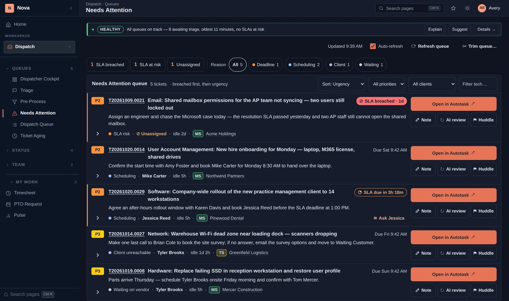
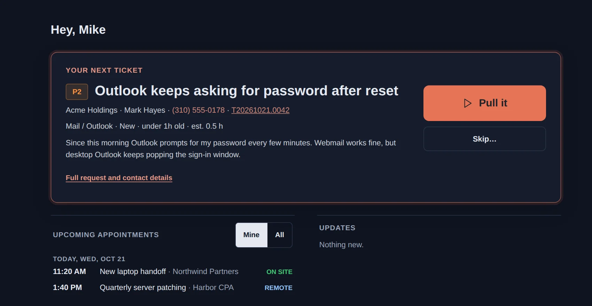
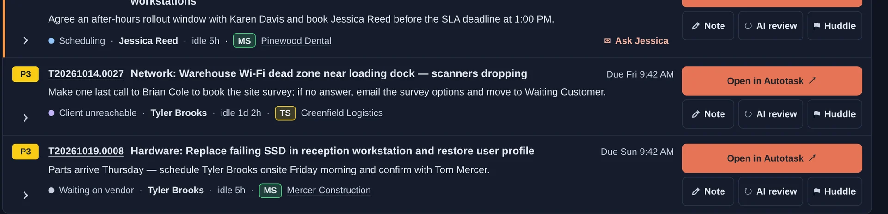

Composite scoring weighs priority, SLA risk, age, skill match and more to rank every open ticket. The Pull Ticket flow presents each engineer their next best work — anti-cherry-picking is structural, not policy. Each card explains why it needs attention right now.

Time to breach counts more as the deadline gets closer. A ticket with 30 minutes on the clock outranks one with 4 hours, even if it came in later.
A P1 outranks a P2, and so on — with weights your admin can tune.
Older tickets get an aging boost, so nothing sits at the bottom forever.
Tickets are matched against each tech's skills, so the next ticket a tech pulls is one they can actually handle.
When only a few techs can handle a type of work, Nova gives that work to them first.
Admins can tune the scoring weights so the queue reflects how your MSP actually prioritizes.
Engineers don't browse a queue and pick what looks easy. They click "Pull next ticket." Nova considers their skills, current load, and the queue's composite scores, and assigns the single best fit. They can skip with a reason, which is recorded so dispatch can see why.

Every ticket on the board says why it's there — a deadline, scheduling, a client follow-up, or waiting on someone — with how long it's been idle and what to do next. No more tickets falling into the void of someone else's inbox.

30 minutes. Bring your queue. We'll show you what a ranked list looks like and what happens when techs Pull Ticket.